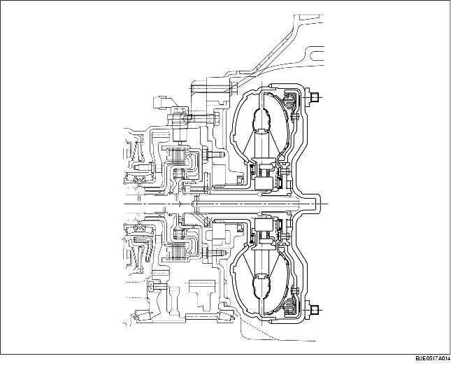

• De lockup-koppeling brengt onder bepaalde omstandigheden een mechanische verbinding tussen het pompwiel en het turbinewiel tot stand. Hierdoor wordt de aandrijfkracht niet langer door vloeistof overgebracht maar mechanisch, waardoor er geen slipverliezen optreden.
• De koppelomvormer heeft een dusdanige karakteristiek dat deze geschikt is voor alle typen motoren.
